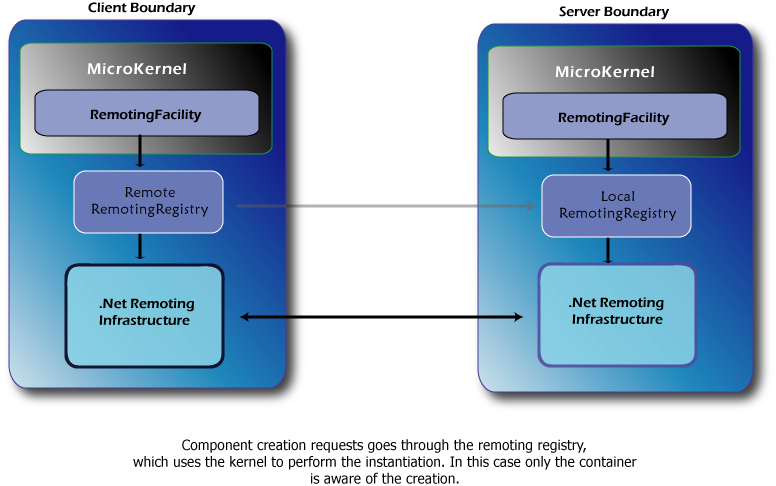

Scenario: Using the container on both endpoints and use the container components
You may overcome the caveats on the previous scenarios by using the following approach. In this case the components must be marked with component remoting activation, which will force the remoting facility to establish a communication channel with the server container.
For each component marked with component remoting activation, the server endpoint will register the component within a RemotingRegistry. The registry is made available through remoting, so client facilities can access it. On the client side, it is used to ask for a remote component instance. The registry is smart enough to ask the container for the instance, so this is the only situation where the container is able to intercept the creation and act upon the component in the standard way.

The following snippets exemplifies this usage.
<castle> <facilities> <facility id="remote.facility" type="Castle.Facilities.Remoting.RemotingFacility, Castle.MicroKernel" baseUri="tcp://localhost:2133" isClient="true" remoteKernelUri="tcp://localhost:2133/kernel.rem" remotingConfigurationFile="RemotingTcpConfigClient.config"> </facility> </facilities> <components> <component id="remote.console.component" service="Example.Shared.IRemoteConsole, Example.Shared" type="System.Object, mscorlib" remoteclient="component" /> </components> </castle>
<castle> <facilities> <facility id="remote.facility" isServer="true" registryUri="kernel.rem" type="Castle.Facilities.Remoting.RemotingFacility, Castle.MicroKernel" remotingConfigurationFile="RemotingTcpConfig.config"> </facility> </facilities> <components> <component id="remote.console.component" service="Example.Shared.IRemoteConsole, Example.Shared" type="ServerApp.RemoteConsoleImpl, ServerApp" remoteserver="component" /> </components> </castle>